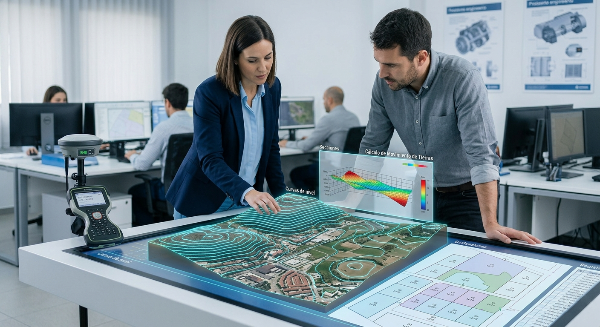

Geomensura y Levantamientos
Precisión milimétrica en la toma de datos del terreno para fines legales, técnicos y de construcción.

Planos para Registro
Realizamos levantamientos planimétricos de alta precisión para trámites legales. Generamos la documentación técnica necesaria para Unificación, Desmembración y primera inscripción de fincas en el Registro de la Propiedad.

Movimiento de Tierras
Mediante levantamientos altimétricos, calculamos con exactitud el volumen de corte y relleno para la conformación de plataformas. Esencial para optimizar el uso de maquinaria y controlar los costos de la obra.

Diseño y Distribución de Parcelas
Planificación y distribución estratégica para lotificaciones y parcelamientos. Optimizamos el uso del área útil del terreno, diseñando lotes funcionales que cumplen con las normativas urbanísticas locales.

Topografía para Diseño Arquitectónico
Generamos modelos digitales del terreno (MDT) a partir de levantamientos de planimetría y altimetría. Proporcionamos curvas de nivel, perfiles y secciones transversales, datos indispensables para un diseño arquitectónico o de ingeniería bien fundamentado.

Replanteo Topográfico
Trasladamos los diseños del plano al terreno físico. Marcamos con precisión milimétrica los ejes, límites y niveles de la construcción, asegurando que la obra se ejecute exactamente como fue planificada.